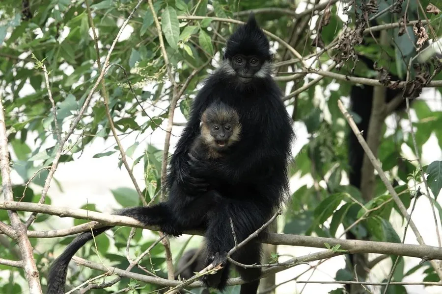

哺乳动物 · 动物界
黑叶猴 Trachypithecus francoisi

中国西南与越南的喀斯特山地叶猴，通体乌黑，头顶有直立的冠毛，以树叶为主食，常攀爬在陡峭岩壁上。
- 分类
- 门脊索动物门纲哺乳纲目灵长目科猴科属叶猴属
- 栖息环境
- 喀斯特石山与山地森林，栖息于石灰岩山区和河谷林
- 地理分布
- 中国广西、贵州、重庆南部及越南北部
- 保护级别
- IUCN 濒危（EN）；中国国家一级保护动物
物种志
黑叶猴体长 0.45–0.6 米，尾长 0.7–0.9 米，体重 6–10 kg。它通体覆乌黑发亮的长毛，头顶的毛向上直立形成冠，面部和手、脚裸露呈黑色；尾部细长，四肢修长，适合在岩石和树木间攀爬跳跃。幼猴出生时全身橙黄色，几个月后才逐渐变黑。
黑叶猴分布于中国广西、贵州、重庆南部及越南北部的喀斯特石山和山地森林，栖息于石灰岩山区和河谷林。它以树叶为主食，也吃嫩芽、花和果实，胃分成多室以适应消化树叶；群体由 5–12 只组成，一雄多雌，白天在岩壁和树冠间活动，夜间在岩洞中休息。雌性妊娠期约 6–7 个月，每胎 1 仔。由于栖息地破碎、盗猎和人类活动干扰，黑叶猴被列为濒危，中国将其列为国家一级保护动物。
形态与习性
- 食性以树叶为主，也吃嫩芽、花和果实
- 体长0.45–0.6 m，尾长 0.7–0.9 m
- 体重6–10 kg
- 寿命约 20 年
- 繁殖妊娠期约 6–7 个月，每胎 1 仔
- 社会结构5–12 只的群体，一雄多雌
- 幼猴出生时全身橙黄色，几个月后变黑
趣味知识
- 黑叶猴的幼猴出生时全身橙黄色，与黑色成体截然不同。
- 它以树叶为主食，胃分成多室帮助消化粗纤维。
- 黑叶猴栖息于喀斯特石山，能在陡峭岩壁上攀爬跳跃。
- 幼猴的橙黄色皮毛可能便于成年猴在岩壁间发现它。